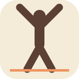

D — S Mark
The square mark you described — ink background, bold cream "S", dreamsicle dot all on the same dark surface. Use as favicon, app icon, avatar.
Download SVG ↓D updated to use C's ink palette. The mark and the wordmark now share the same brand system.
The dreamsicle dot is the brand's persona mark — it represents you, the individual user, inside the larger Sportsona platform. It also acts as a period after the brand name (a confident statement), and visually it's the only saturated color, so it becomes the signature accent across every asset.
Sportsona. = sport + persona = S.
The square mark you described — ink background, bold cream "S", dreamsicle dot all on the same dark surface. Use as favicon, app icon, avatar.
Download SVG ↓The horizontal version of the same idea — full "Sportsona" name with the persona dot. Use in headers and hero sections.
Download SVG ↓The mark and wordmark together as one unit. Use in marketing, splash screens, app onboarding. Reinforces the connection between the S mark and the full name.
Download SVG ↓
The athletic-figure pictogram in the cream-washed palette. Kept around as an alternative mark; less brand-system-aligned with the C/D pairing.
Download SVG ↓Red shield with the flowing curved S. Heraldic alternative if you ever want a more "team crest" feel.
Download SVG ↓Cream banner with red + dreamsicle stripes. Direct varsity feel; useful for sports-themed marketing surfaces.
Download SVG ↓{kind=link}
{kind=link}
{kind=link}
{kind=link}
{kind=link}